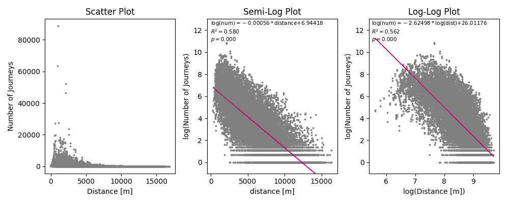
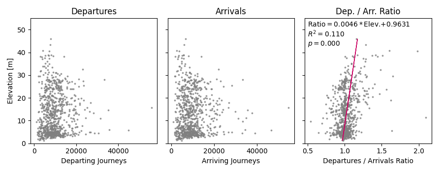
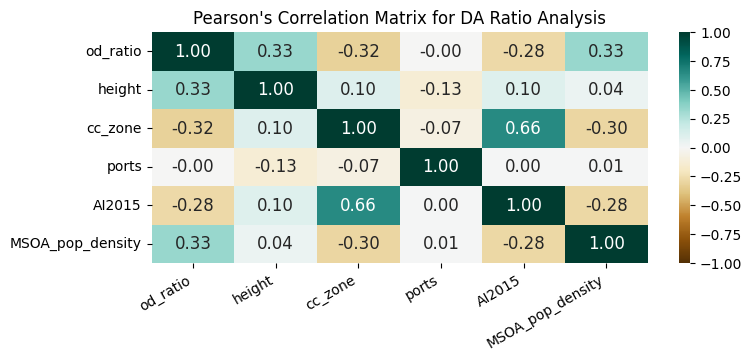

The Impact of Terrain on Cycle Hire Journey Frequency
Introduction
The rapid spread of cycle hire schemes impact the transport system in cities worldwide, increasing the share of cycling and public transport usage, lowering greenhouse gas emissions, and improving public health (DeMaio, 2009). Since its first implication in Amsterdam in the 1960s, the system has seen technological and methodological improvements over time. The modern system equipped with telecommunication technology has enabled casual usages between different stations, encouraging short, high-frequency and one-way journeys(Beroud and Anaya, 2012; Beecham, 2015). The London Cycle Hire Scheme (LCHS), known as the Santander Cycles, is one of these systems. In service since 2010 (Li et al., 2019), it has 800 docking stations within central London (Transport for London, 2023b).
Literature Review
The detailed datasets of cycle hire schemes such as LCHS around the world has enabled analysis for cycling behaviour from many aspects. Gebhart and Noland (2014) has found uncomfortable weather conditions including cold weather, precipitation, and high humidity reduces bikeshare usage in Washington DC. Wood, Slingsby and Dykes (2011) explored the visualisation of journeys taken by the LCHS, illustrating two major patterns of usage: leisure usage often seen near Royal Parks and commuting to and from major train stations in peak hours. Accessibility by other public transport modes also impact the usage of bicycle hire schemes (Gebhart and Noland, 2014).
Meanwhile, research on the relationship between cycling behaviour and the physical environment is limited (Heinen, Wee and Maat, 2010). A small number of past researches (Rodrı́guez and Joo, 2004; Parkin, Wardman and Page, 2008) show that hilliness has a negative impact on cycling. The terrain is quantified in different ways, one segmenting the actual routes surveyed, while the other calculates the average percentage of slope using raster data.
Drawing on these two streams, this report has conducted an anlysis on the unexplored relationship between cycle hire scheme usage behaviour and the physical environment.
Research Question
Does the slope of the physical environment impact the number of cycle hire trips?
Hypothesis
We hypothesised there will be less journeys under hilly conditions, and tested the following two perspectives:
- Docking stations located in lower elevations have more arriving journeys than departures, while stations with high elevation being the opposite.
- There will be a smaller number of trips for origin-destination pairs requiring uphill travel.
Data
Data Sources
The LCHS data published by Transport for London (TfL) is used (Transport for London, 2023b, 2023a), which has the following attributes:
| Dataset | Attributes |
|---|---|
| Docking Station Data | location, name, ID, number of docks per station |
| Journeys Data | Start and end station data (ID, name), date and time, duration, type of cycle (conventional or e-cycle) |
The other datasets used for analysis, and a map of docking stations merged with its height are shown below.
| Elevation Data | Accessibility to Public Transport | Geometries | |
|---|---|---|---|
| Dataset | LIDAR Composite Digital Terrain Model (DTM) (Environment Agency, 2023) | Access Index (AI) (Transport for London, 2015b) | Statistical boundaries (Greater London Authority, 2014), Congestion Charge boundaries (Greater London Authority, 2019) |
| Specifications | Resolution: 2 m | Basis for the Public Transport Accessibility Levels (PTAL) (Transport for London, 2015a). \(\text{AI}<2.5\) will be lowest PTAL (1a), \(\text{AI}>40\) classified as highest (6b) | Downloaded via London Datastore |
Summary of data
The scope of analysis is the journeys taken on the LCHS from December 2022 to November 2023, the most recent one-year period where data is available. There is a total of 8,414,631 journeys taken during this period.
| Statistics | Classic Cycles | E-cycles | Total |
|---|---|---|---|
| Number of Trips | 7,808,234 | 606,397 | 8,414,631 |
| Mean Travelled Distance [m] | 2279.41 | 3124.62 | 2340.32 |
| Mean Height Difference of Travel [m] | -0.23 | -0.07 | -0.22 |
The negative average in height difference indicate downhill travel is slightly preferred over their uphill counterparts. A one-sample t-test shows this value is significant compared to a mean of 0.
Journeys by e-cycles are longer and have less height difference compared to conventional cycles, suggesting physically demanding journeys are avoided by classic cycle users. Focusing on journeys made by classic cycles, this is the hypothesis we have addressed.
Methodology
This research is conducted in two parts. We have first analysed individual docking stations, followed by an analysis on origin-destination combinations. An extensive literature review by Heinen, Wee and Maat (2010) has summarised factors affecting cycling behaviour, and based on the data availability we have considered the following variables:
- distance of journey (average distance between docking stations)
- population density of MSOA
- access to public transport (average AI value of stations)
- number of docking stations in MSOA
- direction of journey
Analyse the usage of individual docking stations
The ratio of departing journeys compared to arriving journeys (hereinafter “DA ratio”) was tested against elevation and other characteristics of the station in a linear regression model. The number of ports per station, the location of station relative to the central zone, the AI, and the population density of MSOA were considered as additional factors.
Summarizing the data into Origin-Destination pairs
We have summarised the data by grouping them by their origin and destination. MSOAs are used as the unit of analysis in order to reduce the size of the matrix. There are 160 MSOAs where LCHS operates, therefore the summarised dataset includes 25,600 rows of data. By removing journeys that start and finish within the same MSOA, we have 25,440 rows of data for analysis.
Analysis of variables
The scatter plot between the distance and the journeys is shown below, along with a semi-log plot and a log-log plot.

The log plot resembles a linear correlation, while the log-log plot has an upward convex. Thus, the relationship between distance and number of journeys follow an exponential relation. Assuming the other variables have a linear relationship, the model we will use to estimate the number of journeys is as follows:
\[ y = \alpha_\text{dist} \exp(\beta_\text{dist} x_\text{dist}) + \sum_i{\beta_ix_i} + \alpha \]
- \(x_{\text{dist}}\): distance of journey
- \(\beta_\text{dist}\): coefficient for exponential law (slope of semi-log regression line)
- \(\alpha_\text{dist}\): constant for exponential law (intercept of semi-log regression line)
- \(x_i\): other explanatory variables
- \(\alpha\): constant for linear regression
- \(\beta_i\): coefficients for linear regression
By considering \(\exp(\beta_\text{dist} x_\text{dist})\) as one variable distance_exp and \(\alpha_\text{dist}\) as its coefficient, the algorithm for a multiple linear regression can be utilised for our proposed model.
Results
Analysis of Individual Points
The relationship between the elevation and cycling activities is shown below. The DA ratio has a linear correlation with the elevation, and is statistically significant explaining 11.0 % of the variance in the DA ratio.

We will consider the multiple linear regression for the DA ratio. The Pearson’s correlation matrix below shows no sign of multicollinearity, and a linear correlation between the independent variable and the dependent variables.

The results of the regression model is as follows.
| Variable | Coefficient | Standard Error | \(t\) | \(P > |t|\) |
|---|---|---|---|---|
| Constant | 0.9246 | 0.018 | 52.034 | 0.000 |
Height |
0.0049 | 0.000 | 11.783 | 0.000 |
cc_zone |
-0.0567 | 0.011 | -5.268 | 0.000 |
ports |
0.0003 | 0.000 | 0.794 | 0.427 |
AI2015 |
-0.0005 | 0.000 | -2.757 | 0.006 |
MSOA_pop_density |
4.6302 | 0.660 | 7.011 | 0.000 |
The factors that lead to more departures than arrivals are the elevation and the population density of the area, while locating in the central zone and the accessibility to public transport lead to more arriving journeys. A 1 m rise in elevation leads to a 0.5 % increase in departures compared to arrivals. stations in the highest PTAL band (AI > 40) will have 2 % more arrivals than departures compared to the lowest band (AI < 2.5).
Analysis of the origin-destination flow
Now, we will analyse the flow of cycles using an origin-destination analysis. The correlation matrix is shown as follows:
There is a collinearity between the number of stations per area, the accessibility by public transport, and whether the docks are in the central area, although this is below the threshold of 5 for a VIF analysis. The results of the regression model is as follows.
| Variable | Coefficient | Standard Error | \(t\) | \(P > |t|\) |
|---|---|---|---|---|
| Constant | -552.5421 | 28.093 | -19.668 | 0.000 |
distance_exp |
2.7091 | 0.034 | 80.581 | 0.000 |
height_diff |
-0.4716 | 0.394 | -1.196 | 0.232 |
start_stations |
57.9386 | 1.517 | 38.186 | 0.000 |
end_stations |
63.3330 | 1.517 | 41.741 | 0.000 |
start_AI2015 |
0.6236 | 0.330 | 1.887 | 0.059 |
end_AI2015 |
0.6825 | 0.330 | 2.065 | 0.039 |
start_pop_density |
-0.0026 | 0.001 | -2.569 | 0.010 |
end_pop_density |
-0.0037 | 0.001 | -3.675 | 0.000 |
start_cc_zone |
25.3524 | 22.087 | 1.148 | 0.251 |
end_cc_zone |
26.5992 | 22.087 | 1.204 | 0.228 |
The model shows that there will be more travel between MSOAs if the distance between the MSOAs are smaller, there are more stations within each MSOA, or the population density is smaller.
Discussion
The impact of elevation
From the results, we can conclude that there is some relationship between elevation and LCHS journeys. With focus on the individual stations, stations located in elevated areas see more departures than arrivals, which aligns with previous research and empirical observations where an uphill journey has a negative impact on cycling. On the other hand, the frequency of travel between MSOAs are not impacted by the relative difference in their height.
The first point of discussion is that the relative height difference may not be representing hilliness that negatively impacts cycling, presenting a limitation of this research. Hills encountered en route, the steepness of slope, and the general hilliness of the terrain are not considered, which the methodology to quantify and the correlation with frequency are both potential fields of further research.
The second possibility is that slope may be irrelavant for the overall route selection. London is a flat city with over 75 % of the stations located between 0-20 m in elevation, and the small difference may not be enough to alter mode choice in the macro scale. The difference observed in the scale of individual ports may be caused by choice within the area, where cyclists prefer departing from high stations but return at nearby stations with lower elevation. Further analysis, considering intra-MSOA differences should be conducted to confirm.
Other factors influencing frequency
Through this research, other decisive factors affecting cycling behaviour were discovered. Closer distances between areas saw more journeys between them, which aligns with previous literature. The negative correlation between population density may indicate usage is more frequent in commercial areas than in residential areas. The positive correlation between public transport accessibility for the destination and cycling behaviour indicate bike-and-ride usage is becoming common, which merits public transport users by reducing door-to-door travel time (Martens, 2007). With the AI at the origin not being significant, a ride-and-bike behaviour seems to be less common than cycling to public transport.
Interestingly, some factors triggering assymetry among outbound and return trips have been discovered. High population density leads to more departures, while being in the central zone increases arrivals. This may indicate Londoners cycle on their way to the city centre, but use other transport modes on their way back. The reasons, whether it might be the darkness as suggested by Stinson and Bhat (2004), influence of alcohol, or simply not wanting to engage in cycling after a long day, is a potential area for future exploration.
Limitations
This research has not considered all factors that may influence cycling behaviour, such as socio-economic factors, infrastructure, and weather. The variables may be proxies of the actual dominant conditions, in which case my discussions may be drawing incorrect conclusions. The journeys by classic cycles on LCHS may not be the representation of the cycling behaviour in London as a whole, which does not take into consideration private cycles, e-scooters, and other bicycle hire schemes.
Conclusion
In this research, the correlation between elevation of individual docking stations and departure-arrival ratio has shown uphill travels have negative impact on cycling behaviour, although this pattern could not be observed when considering the macro-scale origin-destination journey frequency. The field of studying cycling behaviour through cycle hire data is growing rapidly (Beecham, 2015), and further research is expected for the better understanding of the effect of the physical environment on cycle hire flows.